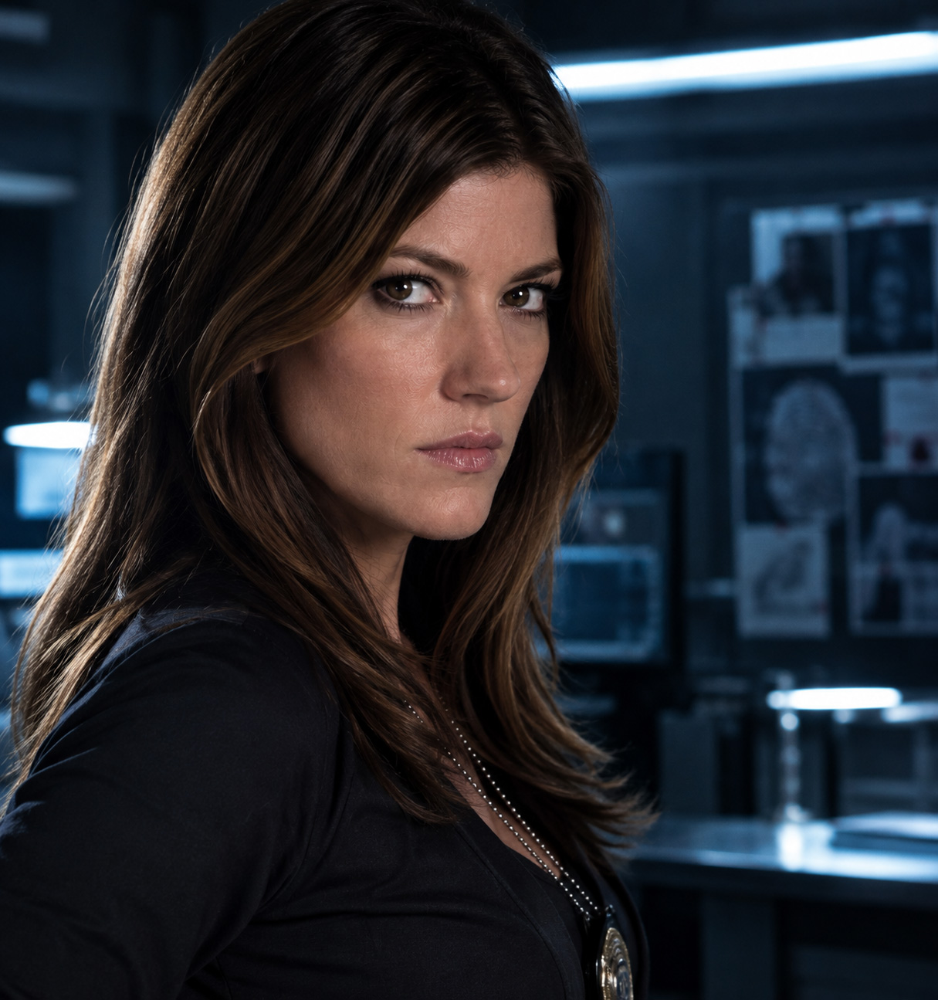
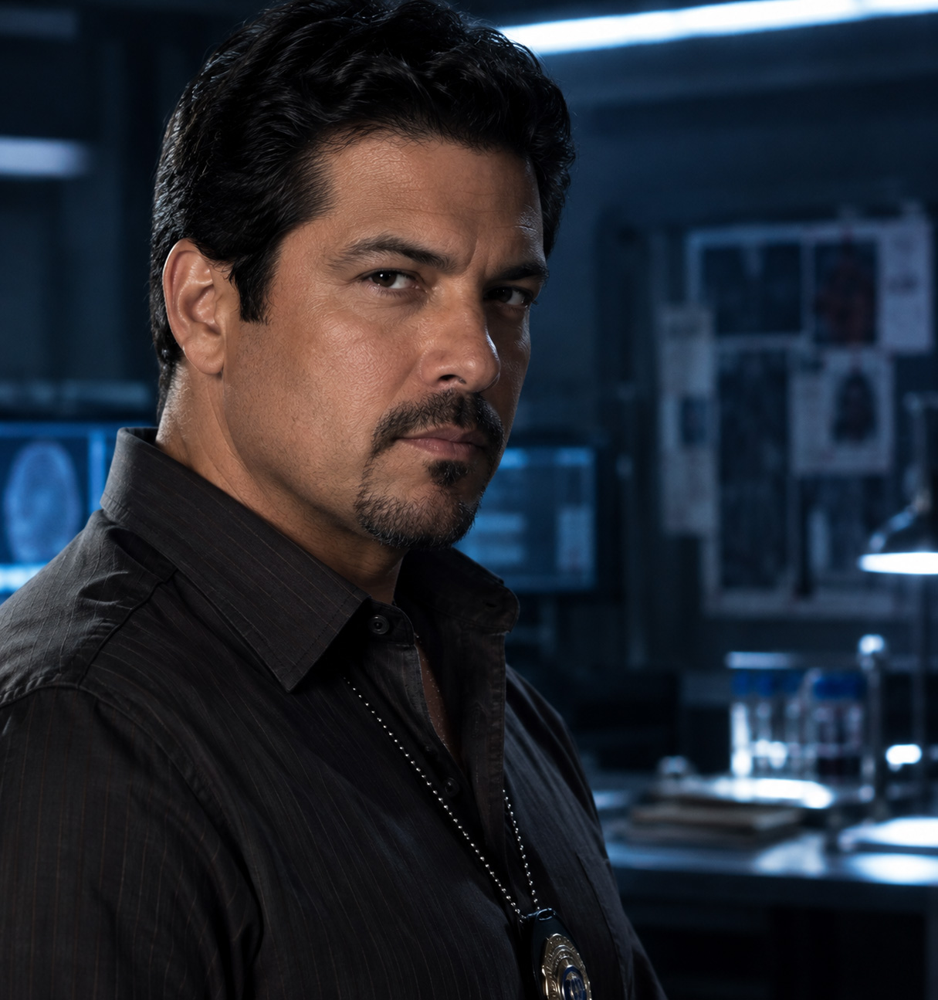
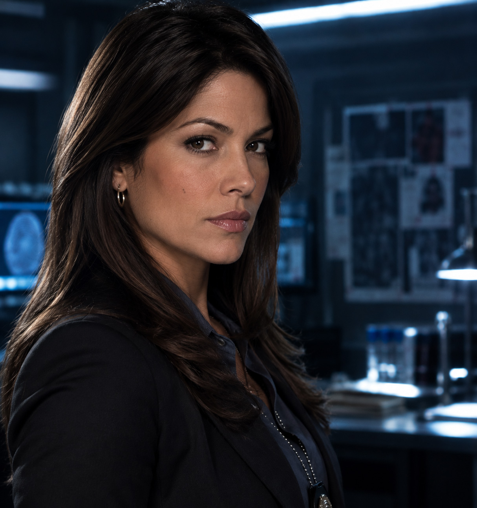
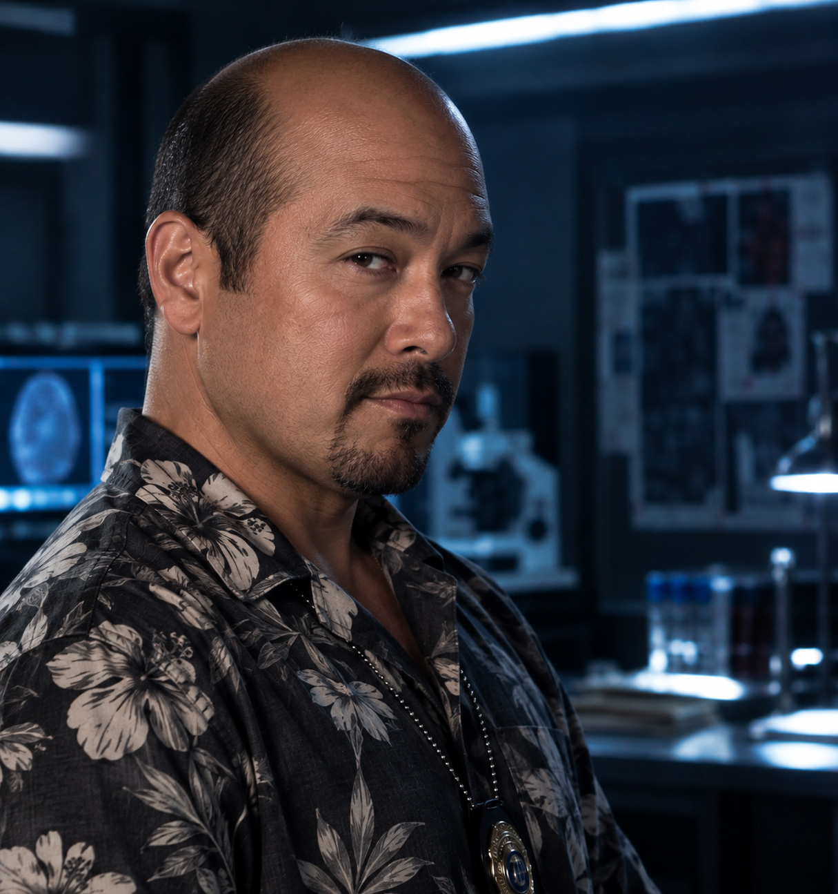
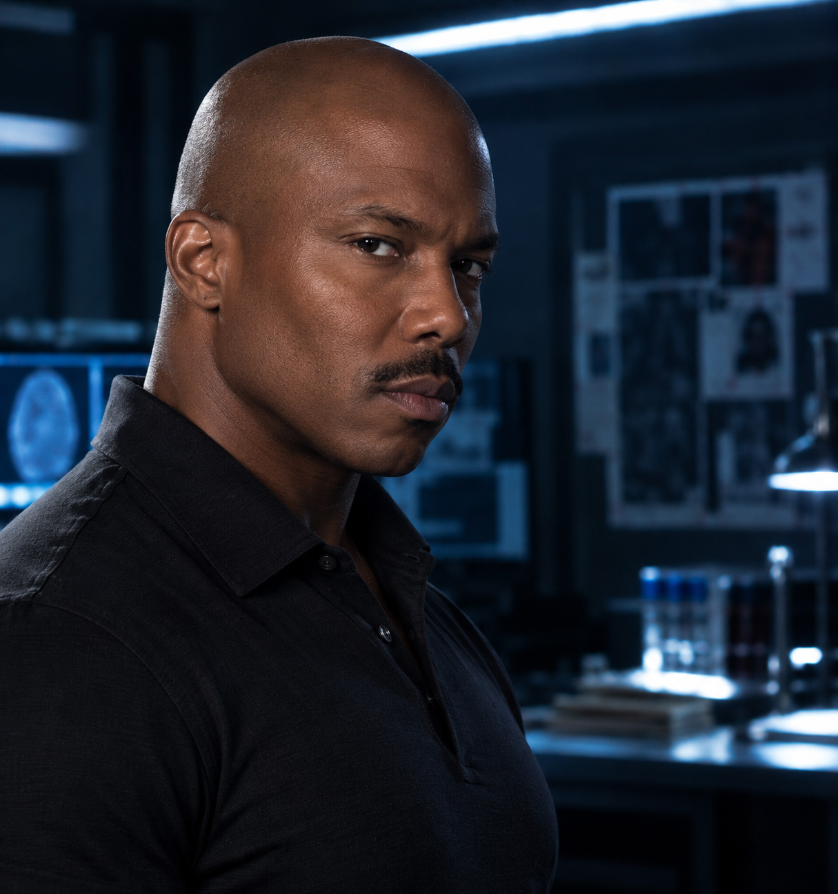

Michael C. Hall is an American actor known for his work in
television, film, and theater. He became widely known for playing
David Fisher in Six Feet Under before taking the lead role in
Dexter. He has also appeared on Broadway, including productions of
Cabaret and Hedwig and the Angry Inch. His performance as Dexter
Morgan became one of his most recognized television roles. Hall's
portrayal helped make the character a memorable part of modern
television.
Read more...

Debra Morgan — Jennifer Carpenter
Jennifer Carpenter is an American actress known for her work in
television and film. She gained attention for her role in The
Exorcism of Emily Rose before becoming widely known for Dexter.
She has also appeared in series such as Limitless and The Enemy
Within. Carpenter's portrayal of Debra brought a strong and
emotional presence to the series. Her character's relationship
with Dexter became an important part of the show's story.
Read more...

Angel Batista — David Zayas
David Zayas is a Puerto Rican-American actor known for his work in
television and film. Before becoming an actor, he served in the
U.S. Air Force and later worked as a New York City police officer.
He is also known for roles in The Expendables and Skyline. Zayas
played Angel Batista throughout the series with a warm and
approachable style. His character became an important member of
the Miami Metro Homicide team.
Read more...

Maria LaGuerta — Lauren Vélez
Lauren Vélez is an American actress known for her work in
television, film, and theater. She began her career on stage and
later gained recognition through television roles including New
York Undercover. She has also worked as a producer and director
throughout her career. Vélez brought a determined and confident
personality to the role of Maria LaGuerta. Her character played an
important role in the development of the Miami Metro Police
Department storyline.
Read more...

Vince Masuka — C. S. Lee
C. S. Lee is a South Korean-born American actor, director, and
producer. He studied acting at Yale School of Drama, where he
received an MFA.
In addition to Dexter, he has appeared in shows such as Chuck,
Fresh Off the Boat, and Nora From Queens. Lee played Vince Masuka,
the forensic specialist on the Miami Metro team. The character is
known for his distinctive personality and humorous interactions
with the other members of the department.
Read more...

James Doakes — Erik King
Erik King is an American actor and producer known for his work in
television and film. He has appeared in projects including
Casualties of War and National Treasure.
He is also known for his television work in Dexter and Oz. King
portrayed James Doakes, a detective who works alongside Dexter at
Miami Metro. His character is known for his strong personality and
his suspicion of Dexter's behavior.